Spectacular Mogao Caves
Stumbling back to the guest house like a drunken dad out of a party,
I felt very tired and sleepy but still remembered to take a shower before dropping onto the bed.
Chores like writing up my travel log and washing clothes were left behind. I could not keep my eyes open…
Waking up naturally before 9:00am, it was not too late. It felt great to get enough sleep.
Breakfast was a cup of hot brown sugar water.
I started washing dirty clothes and line-dried them on the multi-purpose rope stretching from the headboard to the window sill.
With the hot sun and very dry weather, clothes did not take long to dry. I did not even bother squeezing the water out.
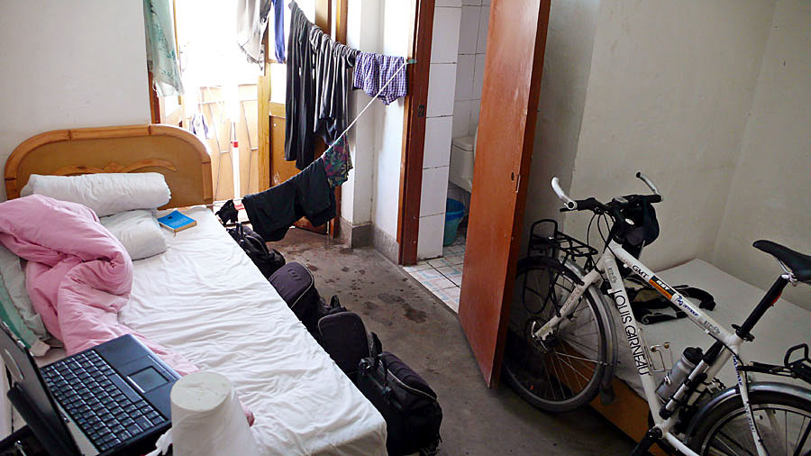
Then I started working on the travel log for yesterday’s night ride which was quite exhausting. Why did I push on without a cause?
I went for a walk after the remaining chores had been finished.
“Dunhuang Night Market” where I drank last night became “Oasis Market” by day. Anything could be bought there, you name it.
The picture shows a stall owner making chili powder.

All the stalls selling dry fruit at the pedestrian-only area were alike with not only the same products for sale but also the same stall setup.
Dried fruit is my favorite – Oh! well, I am from Yilan!
[Note: Yilan, Taiwan is famous for its dried fruit]
You could sample anything shown in the picture. One was not enough?
get a second one, and don’t forget to make comments:

“Not sweet, tasteless”
“Not pitted – not for me”
“Need peeling – troublesome”
Without the comments, the stall owner would automatically bag the one that you just sampled for you.
There were several goodies. I bought ice plums, almond inside apricots and pearl tomatoes.
Everything cost either 10 or 12 RMB a Chinese pound – not expensive.
I grabbed two tasty, but a bit expensive, goodies after paying up, but forgot my bags of dry fruits at the stall.
Later on, I sensed that I paid for something but my hand was empty – very forgetful.
Lunch was at the “Oasis Market”. There were lots of restaurants offering a variety of different cuisines.
I liked to try the local specialty, so I went to a packed small restaurant and ordered a Dunhuang latiaozi.
[Note: latiaozi is a noodle; the dough was cut in pieces and then pulled long before being cooked]
Noodles and sauce are served separately, mix it up yourself.
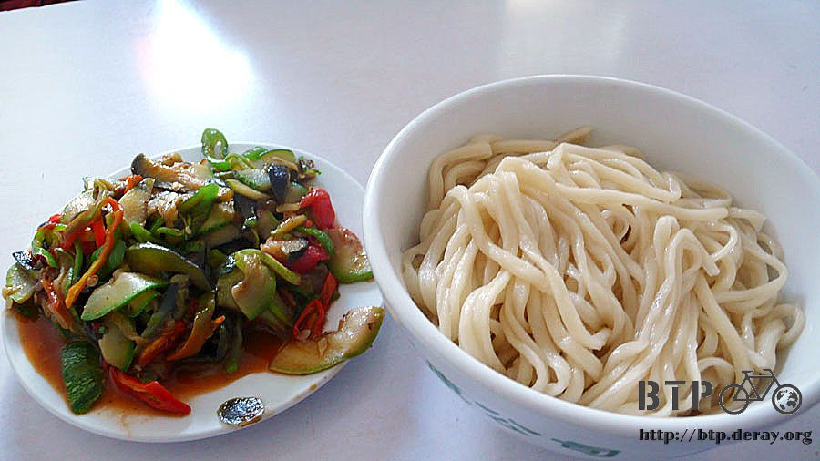
The noodles were hand-made, nice and chewy,
and the sauce was made of a variety of vegetables such as egg plants, winter melons, bell peppers, tomatoes and chili peppers.
The mixed noodle was yummy and the mild spicy sauce stimulated the appetite.
In the afternoon, I was headed for the most notable attraction in Dunhuang,
Mogao Caves which was included in the UNESCO world heritage list in 1987.
[Note: Mogao Caves is also known as Mogao Grottoes or Mogao Ku]
I asked the guest house staff how to get there by public bus, since it was 25 km from the downtown Dunhuang.
Taking a taxi would definitely be a rip off!
My guest house was in a great location, a night market was right in front of it,
the Dunhuang museum and the Dunhuang theatre were right next to it.

And it was only 3 minutes walk to the public bus stop

The buses run every 20 minutes - bus fare: 8 RMB - ride time: 30 minutes.
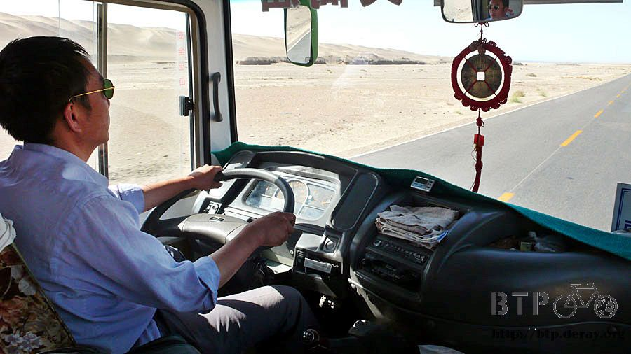
I was back on the road where I night biked alone last night in the bus. I was glad that it was all over.
Ready for the ticket price for Mogao Cave?
Prequel – the admission fee for other attractions.
Yellow River: 30 RMB
Jiayu Pass: 60 RMB
Emperor Qin’s Terra-Cotta Warriors and Horses Museum: 90 RMB
Take a guess – how much is the ticket price for Mogao Caves?
Ready?
I asked an ice pop hawker for the ticket price before coming and was totally shocked.
When handing over the money, 160 RMB, my heart was not bleeding too terribly – it was at least well-prepared.
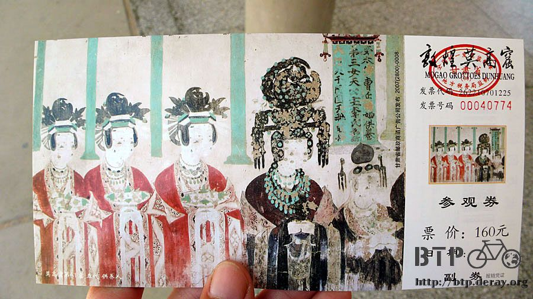
Summer is the high season, so the ticket price is raised to 160 RMB for Chinese and 180 RMB for foreign visitors.
Winter is the low season, half price - 80 RMB.
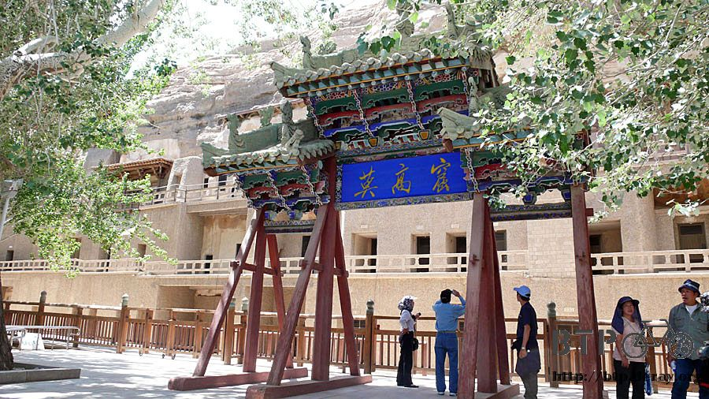
Beverages were even more expensive, the 2.5 RMB cola was sold for 6 RMB,
the 1 RMB water was sold for 5 RMB, and the 0.5 RMB ice pops were sold for 2 RMB.
Every time I learned a new price, 100 CC of blood were lost. Finally, I did not buy anything.
Stupas were scattered at the entrance, I do not know when they were built.
They did not seem to be precious; otherwise they won’t be just placed here.

I had my camera and notebook ready to visit and record the great statues and murals,
but photography, recording, cigarettes and backpacks were strictly forbidden.
Checking in my bag and camera at the gate, I got in and lined up. Staff would divide visitors into small groups.
Each group with about ten people was assigned a tour guide from Dunhuang Research Institute. Each tour was about 2 hours long.

There are more than four hundred caves and every one is locked.
They are unlocked only if the visitors are accompanied by tour guides.
No lighting inside the cave, the guide carries a yellow flashlight and the visitors follow the light pointing at the wall with the explanation.
When a cave tour is finished, the guide will lock the door if no group is waiting outside.
They did a very good job of preserving the caves with respect to the visitors.
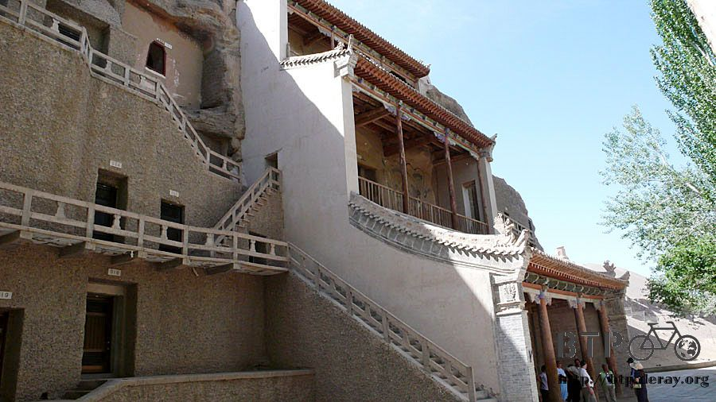
There are more than four hundred caves, of which you will see only ten caves open to public on the short tour.
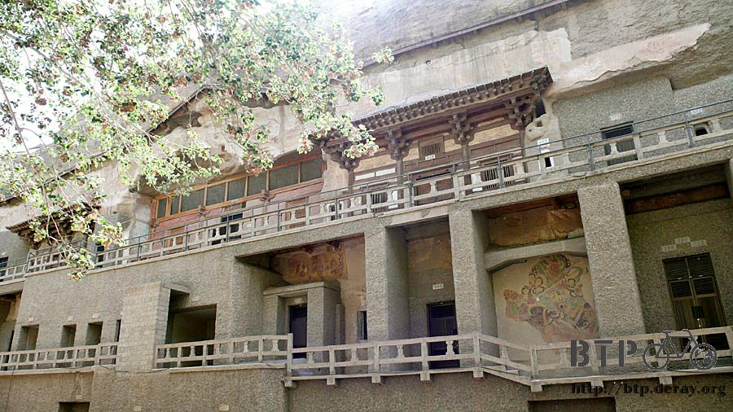
Mogao Cave is a shrine of Buddhist art treasures, the caves construction and maintenance spanned several dynasties.
Each new dynasty would cover the walls with clay and paint new murals.
The floor tiles were also layered by one dynasty after another over thousand of years.
The caves had become a collection of art interactions of the ancient dynasties.
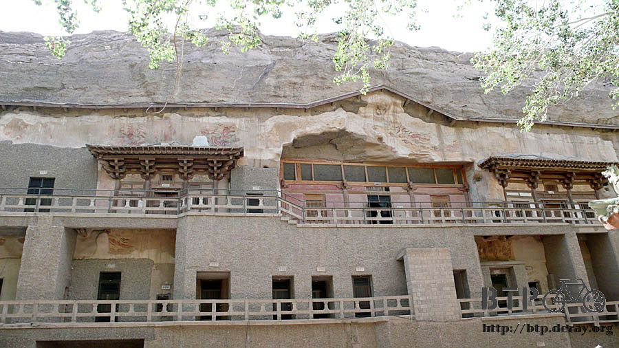
It’s a pity that I could not take any pictures. However, I did learn many interesting things from the guide.
The American art thief, Langdon Warner, who used chemicals and tapes to remove twenty six murals, was always mentioned by the guides.
However, only eleven wall paintings were restored. The rest of them disappeared from art history forever.
The library cave used to store fifty thousand precious manuscripts sealed off thousand years ago
was eventually rediscovered during the international "Joint Army of the Eight Powers".
During war time, nobody cared about what had been found in a little town in the far northwest reaches of China.
The discovery brought archaeologists from Japan, France, Russia and elsewhere flooding into Dunhuang and they promptly emptied the cave.
They stole or purchased by deceit more than eighty percent of precious manuscripts which ended up in foreign counties.
What had left were only incomplete fragments. However, the discovery of the library cave cultivated the study of Dunhuang culture.
Chinese scholars said that the library cave is Dunhuang’s forever heart-broken archaeological site…
The art of the Mogao Caves is composed of cave architecture, murals and sculptures:
1. Cave architecture
There are many variations in the architecture of the 492 caves, some have a rectangular roof and some are in human shape.
The caves also vary in size, from tiny to huge.
The temperature inside the caves is as cool as if air-conditioned, in spite of the scorching heat outside.
The grottos were all carved out of the rock in three tiers, and the large ones are as high as 40 meters extending inwards tens of meters.
The cave number system was first done by French who looted the most precious literary works.
Then, the Chinese painter Zhang Daqin numbered the caves. He liked the murals very much.
Finally, the Dunhuang Research Institute took over the cave numbering.
2. Murals
In spite of the erosion caused by wind or carbon dioxide for more than 1,300 years,
the 45,000 square meters of murals still keep their bright colors
Why have the wall paintings retained much of their bright hues?
The answer is that the minerals used as pigments are stable and withstood the test of time.
In addition to thousands of Buddha images painted on the walls, the murals are like today’s comic books, depicting a variety of Buddhist stories.
Siddartha’s previous lives, the travel of Zhang Qian to the West, a little prince sacrificing himself to save tigers. Everything was vividly painted.
The murals touch on a wide range of activities, including social activities, architectures, music, clothing, and transportation.
The Dunhuang scholars have likened the murals to a priceless museum on walls.
3. Sculptures
In the caves there are some 2,400 painted sculptures, some are tiny in size and some are 30 meters in height.
In the heyday of the Tang dynasty, the cave sculptures were of the finest quality from the finger poses,
facial expressions, and the folds in the clothes.
The guide also complimented the sculptures done in the Song dynasty.
It is a pity that most of the Song sculptures were on the first floor, they had been completely damaged and very few survived.
The funniest thing was the guide did not spend much time on the sculptures done in the Qing dynasty because they were of poor quality.
They did not give the Qing dynasty any credit at all.
I am fond of Xixia’s lotus floor tiles, very pretty. The title patterns and the sandwich cookie patterns are alike.
Then I noticed that I had no idea about Xixia and wondered what kind of dynasty it was?
Each of the ten grottos that I visited had its own characteristics and artistic style,
and the guide was nice and professional, so the 160 RMB admission fee was well-spent.
I felt pleased that I had came here during my lifetime. It was my honor to visit Mogao Caves.
The 2-hour tour was very short – I was deeply moved by the variety of caves with their individual art.
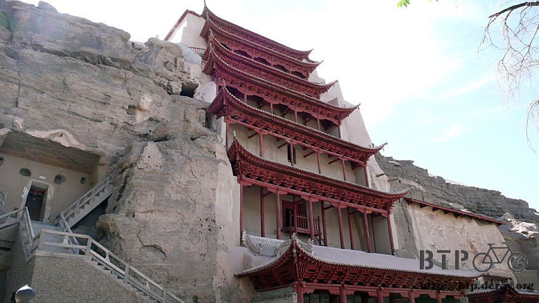
No camera was allowed within the fenced-off area, there were many photographers outside offered photo service.
For people who like to take pictures of tourist spots, this is a nice service. It is about 10 RMB a picture.

I wandered in the shopping area after the tour.
The souvenir stands could be classified into “for the wealthy” and “for the poor”.
The mural duplicates of high quality are sold at the “for the wealthy” store, and labeled with price tags in RMB, USD and JPY.
The average price is about 5,000 RMB. Now, you have some idea about the consumer capabilities of the wealthy.
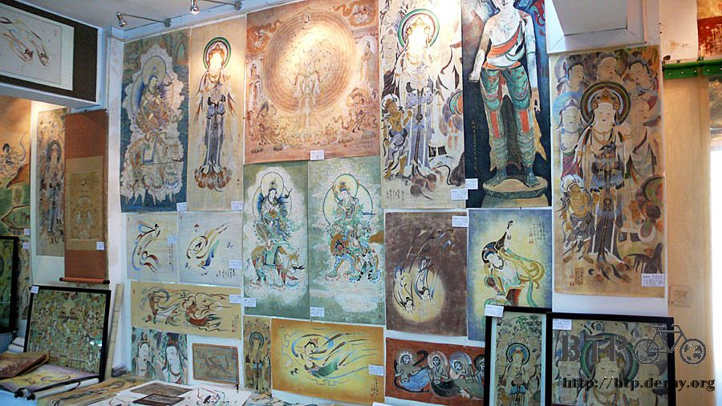
The “for the poor” stands selling silk scarves and small jewelry were the place for me.
I felt like buying a scarf to cover my face.

I am headed to Xinjiang which is at higher altitude than Gansu, and needed to prepare myself for the high temperate in the desert.
I tried on a black scarf.
“You look like a Muslim” said the stall owner with smile on his face

The black one was hot and thick, I almost could not breath.
I bought a blue one made with breathing material – 20 RMB.

Then, I saw a man making painting on white shirts and asked his permission before taking pictures of him.

However, I could not afford the hand-painted shirt, so I just bought small items like this square fabric with “Silk Road” on it.

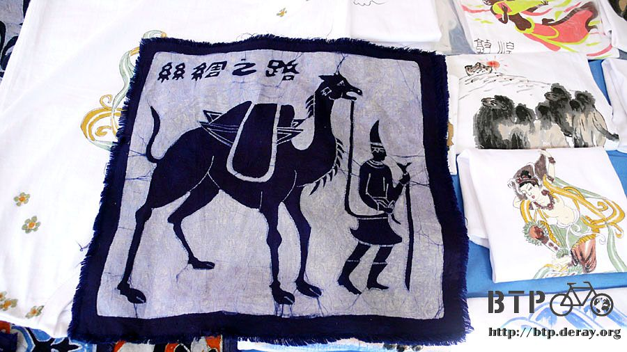
Postcards were one item I would buy since they were done by professionals and had better quality than my own shots.
They also gave out flavor of traveling.
I chose a Dunhuang 14 scenes combination package containing 22 cards – 40 RMB on price tag.
The stall staff gave me a discount – half price, 20 RMB.
Wasn’t it over-exaggerated? The price was cut in half before I even started bargaining,
which told me that I would be an idiot not to haggle.
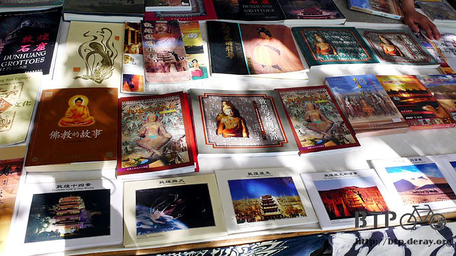
I got a 20 RMB bill out and told the stall staff “this is all I got,
and I need to take the public bus back to Dunhuang downtown before handing over the money,
It was obvious that they either sold it for 12 RMB or did not sell it at all.
Of course, he took the money and gave me the 8 RMB change with no hesitation.
His quick reaction made me wonder what the real cost of the postcards were with a feeling of regret.
Never mind, at least it was discounted and I did have more than 20 RMB in my pocket.
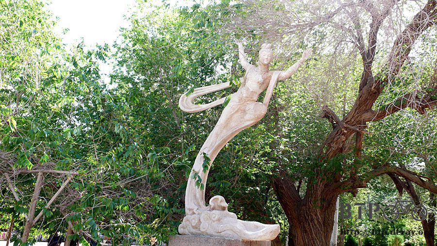
The Dunhuang train station is on the way to Dunhuang downtown,
in the suburbs close to the airport. It seemed it was under reconstruction.

I bought an ice cold juice to quench my thirst after getting back to downtown.
Only if money were not money, would I pay the boosted prices at the tourist attraction.
I got a 20 RMB cents bill change back that I had never seen before. It had Korean influence.
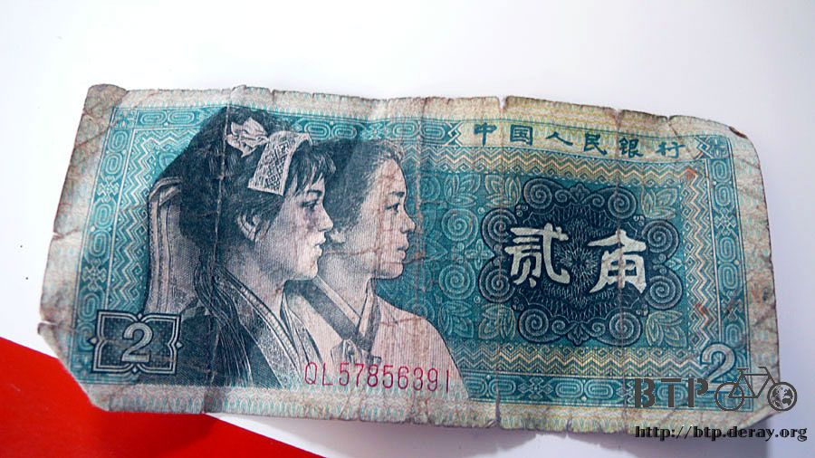
Tonight, I had lamb meat fen soup, stir-fried lamb offal and xinpi water for dinner at the “Oasis Market” again.

The lamb meat fen soup was lamb meat with vermicelli in light broth – quite yummy.

As for the stir-fried lamb offal, I could not figure it out what they were either by looking or by tasting.
However the cumin in the dish made everything tasty.
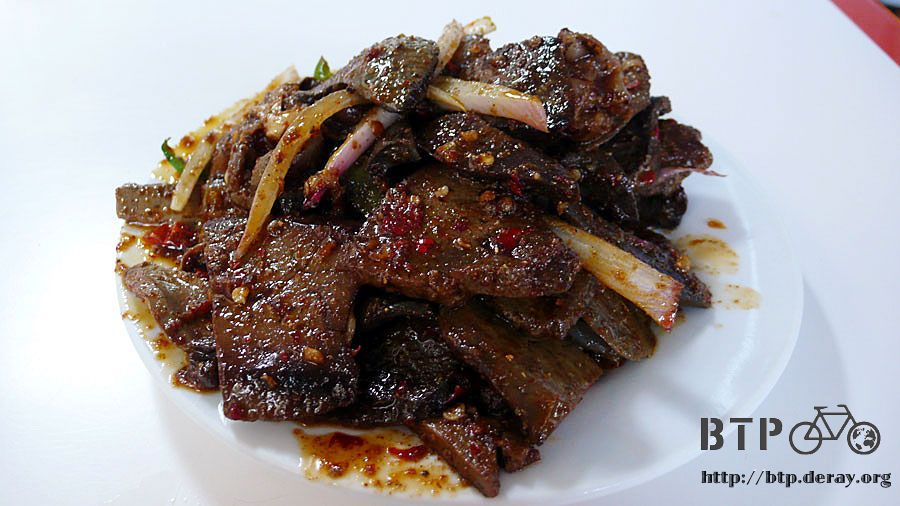
The large ice cold “xinpi water” tasted like the lighter version of the dark plum juice.
It has the nickname ‘remedy for summer heat” which was very true.
Today’s expense including the entrance fee for Mogao Caves, small souvenirs, food and drink was about 300 RMB.
Tomorrow I would be visiting Crescent Lake and Mt Mingsha
[also known as Mingsha Mountain, Singing Sand Mountain or Echoing Sand Mountain].
The entrance fee was 80 RMB and the camel ride fee was 60 RMB.
Dunhuang just burned my travel money!!
Today was the day which made me feel that I was really traveling the Silk Road.
If it was possible, I would like to stay one more day to explore more of the attractions of the Silk Road.